个人简介
我是南开大学新闻传播学院的吴宇凡，是个比较佛的00后。相比于周围的同学热衷于参加竞赛、发表论文、准备考公考研考编，我更喜欢活在当下享受目前的大学生活。但潇洒不是摆烂，是我自信的状态。虽然我比较佛系但我的课余生活也很丰富。我目前最大的爱好是旅游和摄影，更喜欢旅游时带着相机去拍摄异地的风光。除此之外我也喜欢读书、四处游玩、看视频以及剪视频。
最近发现很多同学都在为了未来焦虑，但我是个相对来说心态比较好的人，因为焦虑的反义词是具体，很多无谓的焦虑来自很远的东西即刻就想看到结果。做好眼前事，用平和的心态来对待生活中的未知。
我的爱好
- 摄影
- 旅游
- 视频剪辑
- 撸猫
我从去年春天封校开始接触摄影，学习了已经有一年的时间，平时会随机抽取一名幸运好友党我的模特，但更多时候会喜欢拍风景和静物。
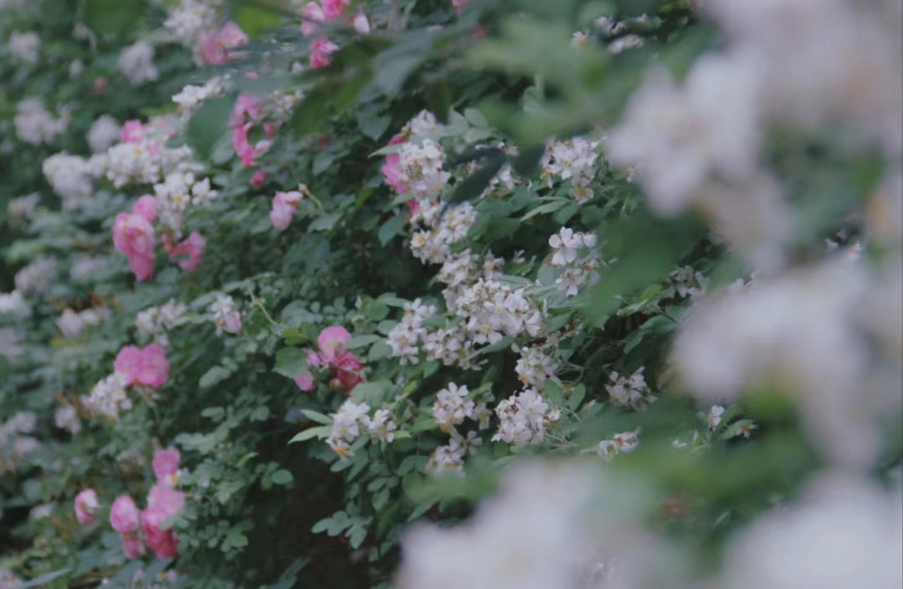
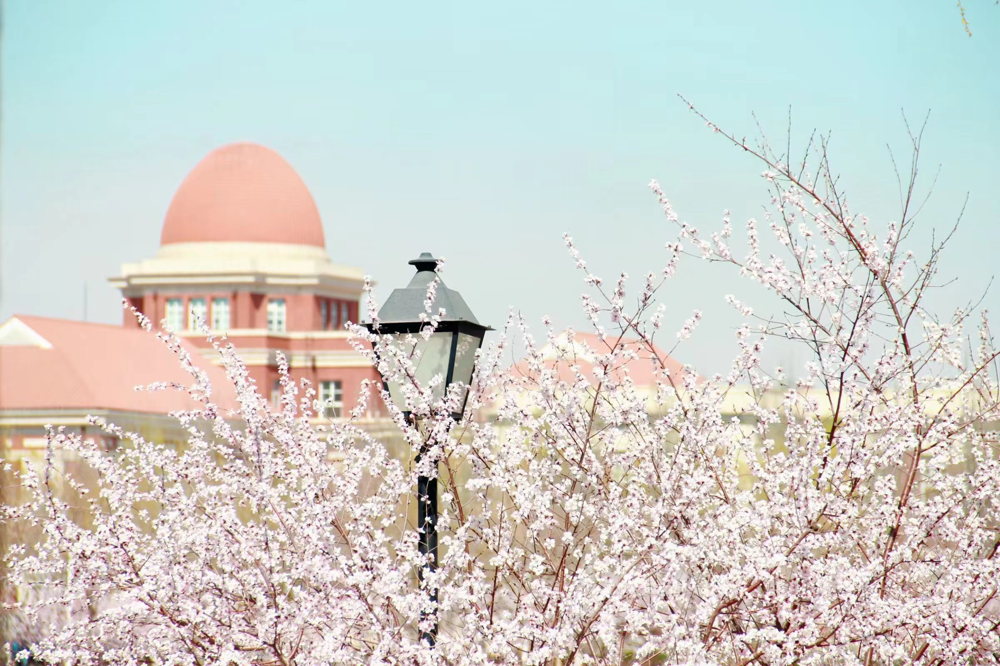
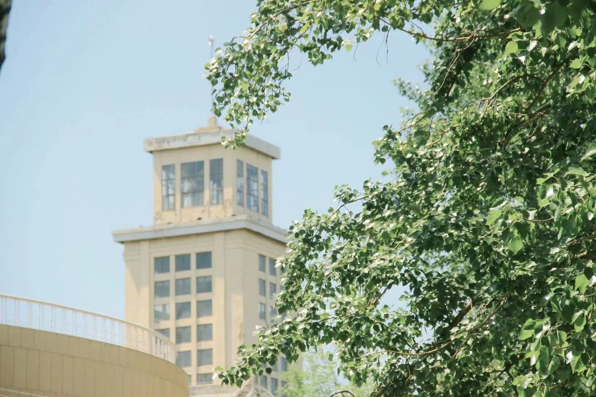
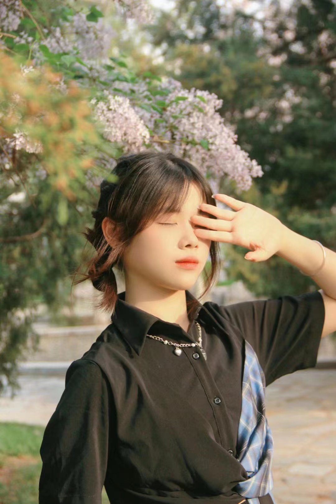
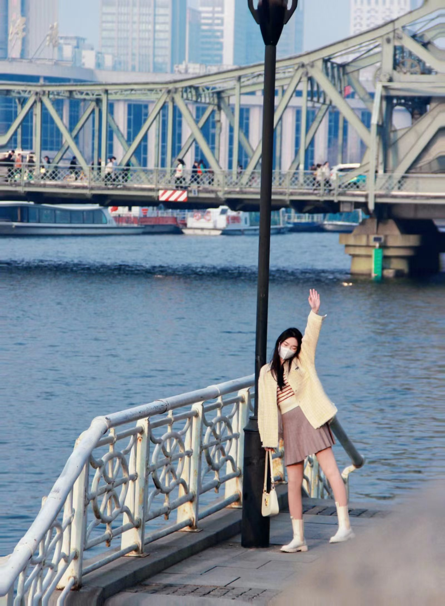
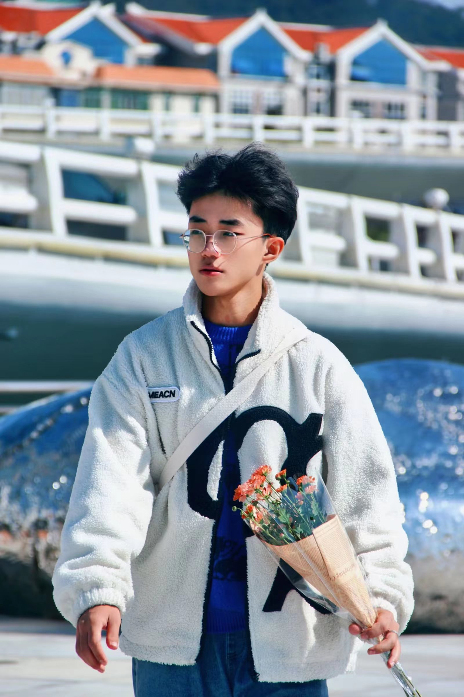
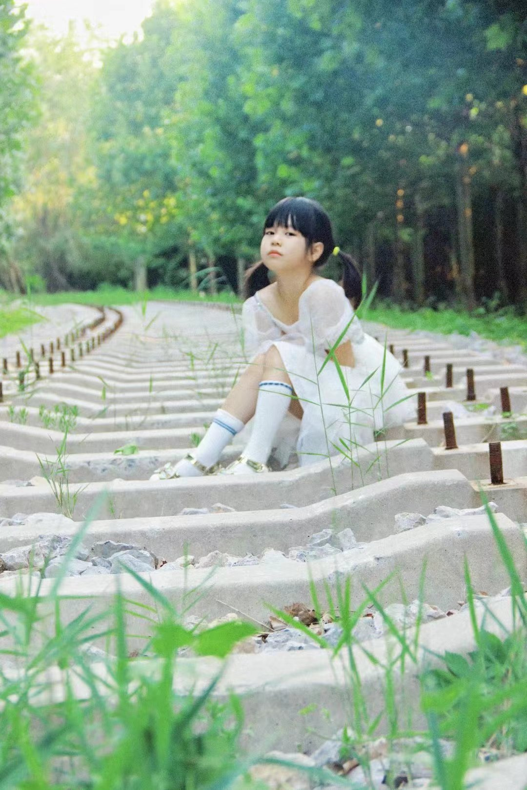
上大学以来在寒暑假及各种假期去过沈阳、济南、厦门、武汉等地旅游，以后还会找时间去更多没有去过的地方。很多人不理解为什么要花那么多时间精力金钱去旅游，借用张嘉佳的一句话来回答即：旅行的意义不是逃避，不是躲藏，不是获取，而是在想象之外的世界里去发现心中真正觉得主要的东西。
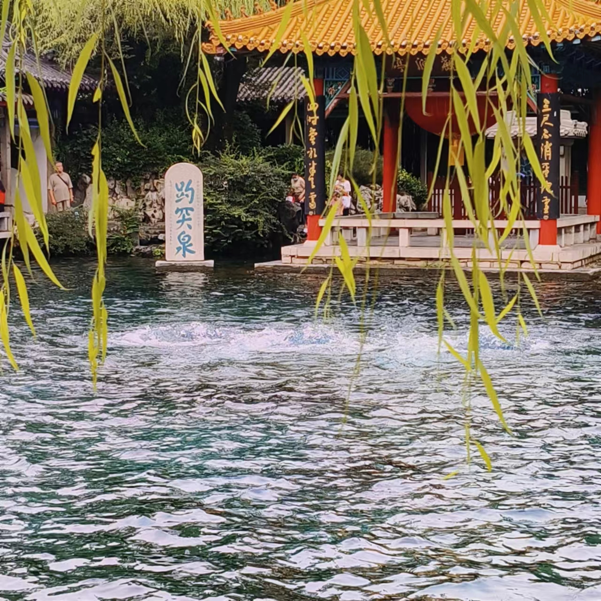
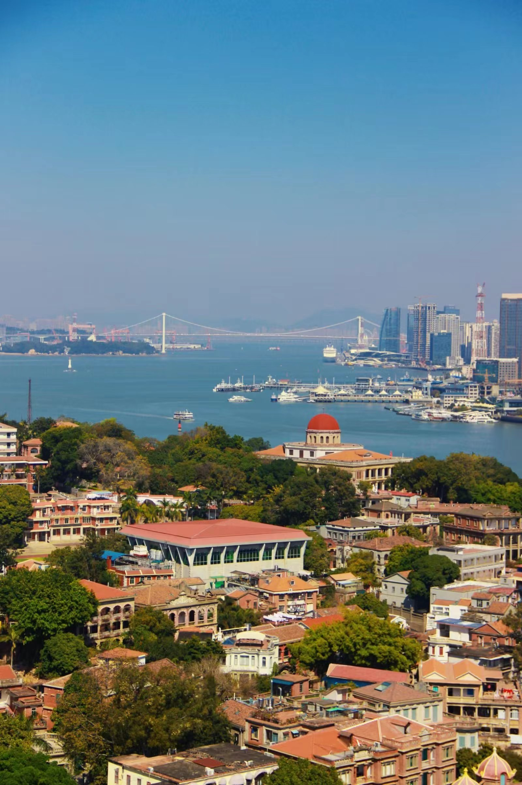
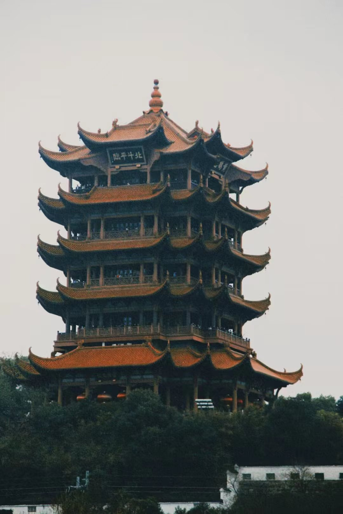
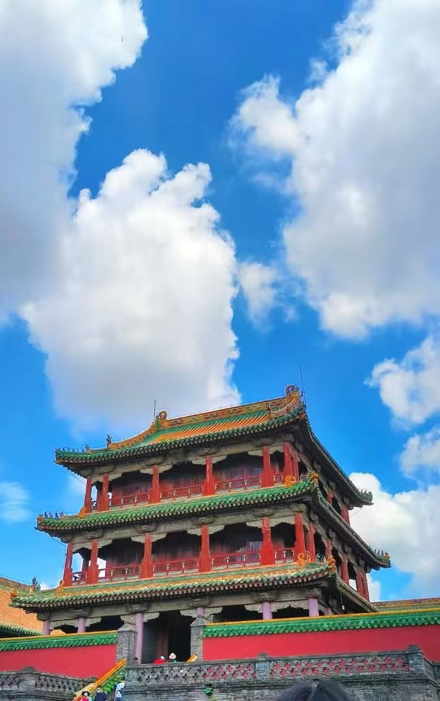
大二上学期在田亦洲老师的非线性编辑课上找到了视频剪辑的乐趣，就开始尝试自己用Pr剪辑视频（但是现在不剪了）。我在这门课上做的期末作业也得到了田老师的认可，并发布到南开新传爱创作的b站账号上。
这是我的视频的链接，内容为我设计并剪辑的英剧《浴血黑帮》的预告片:
浴血黑帮预告片
这是我的猫，是一只名字叫翠花的公猫。
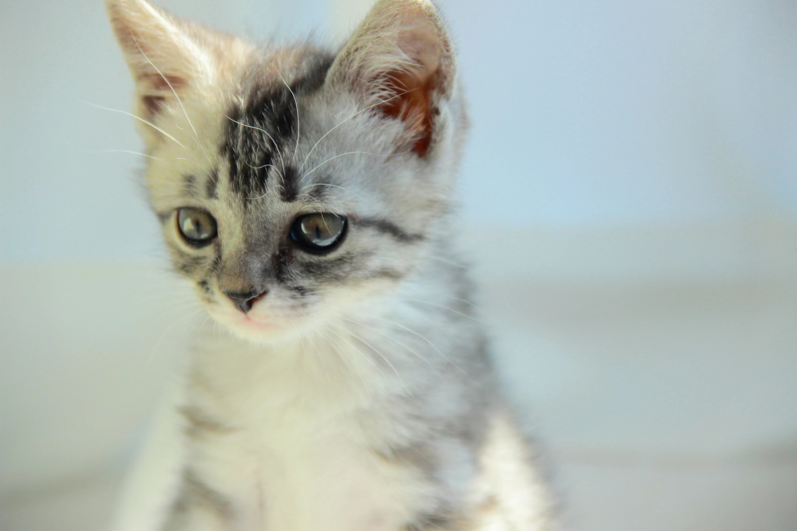
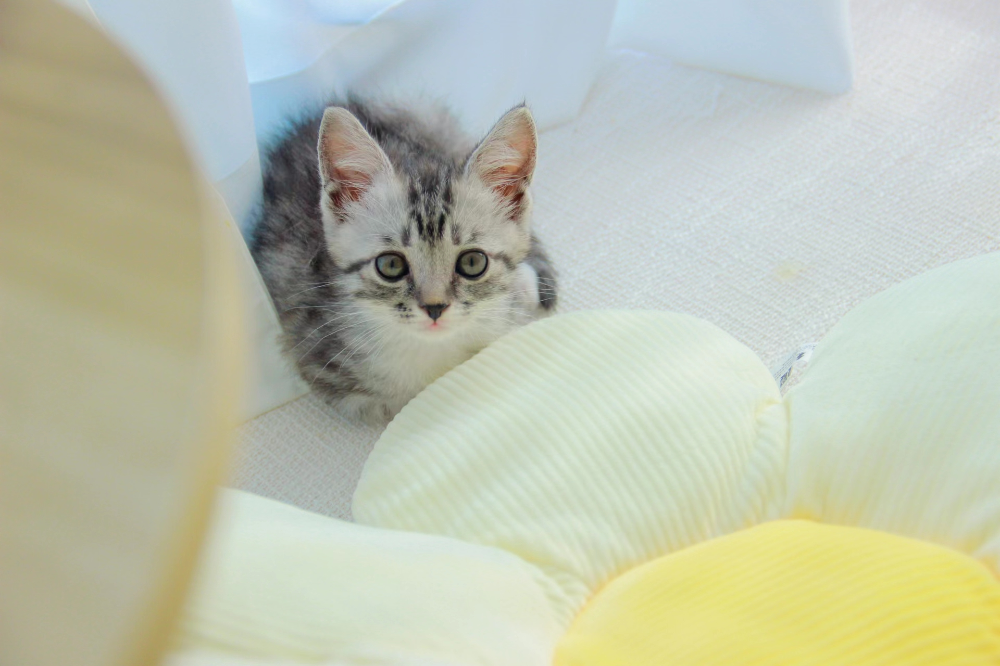